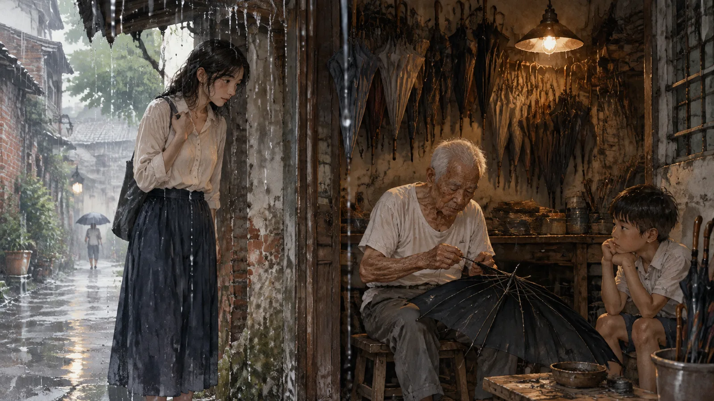
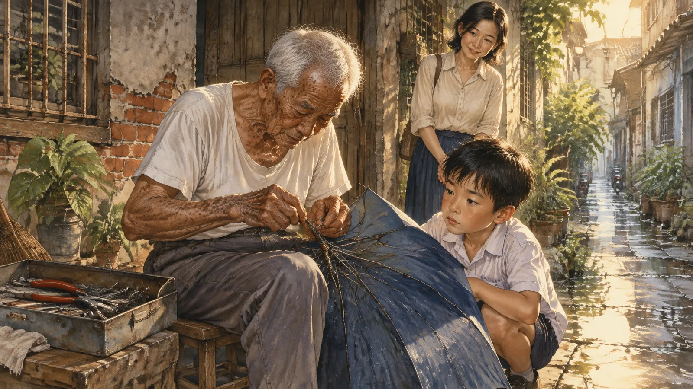
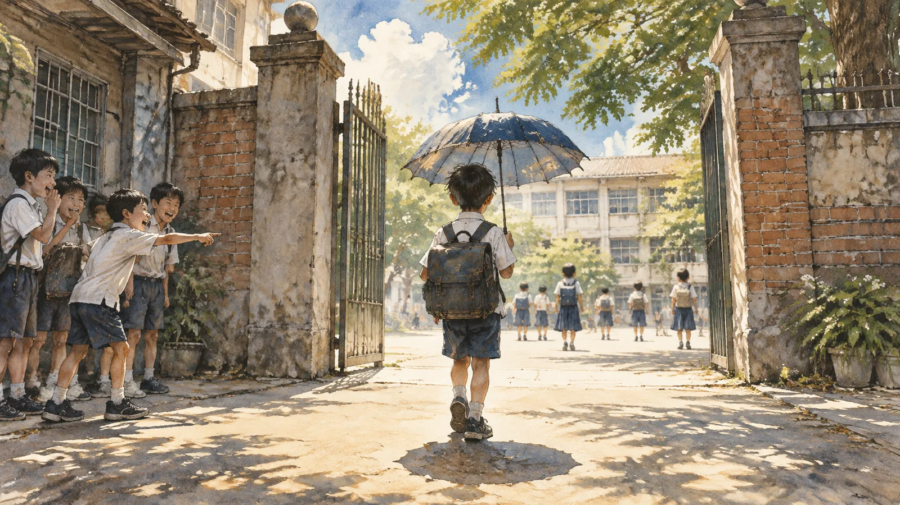
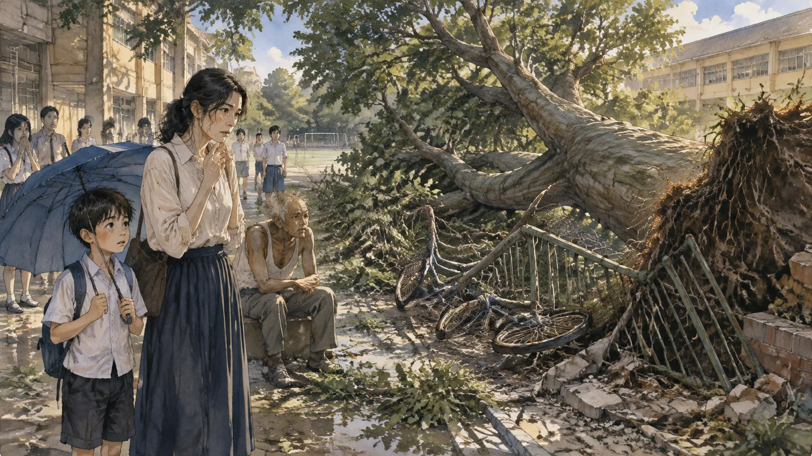
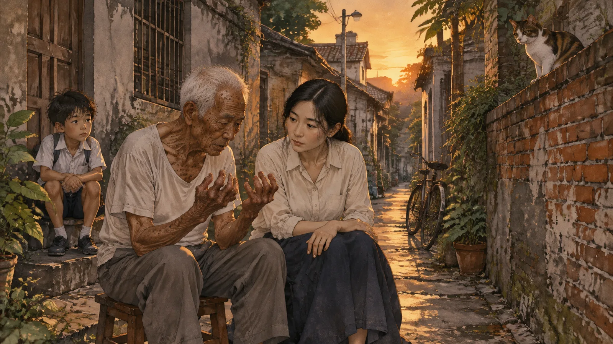
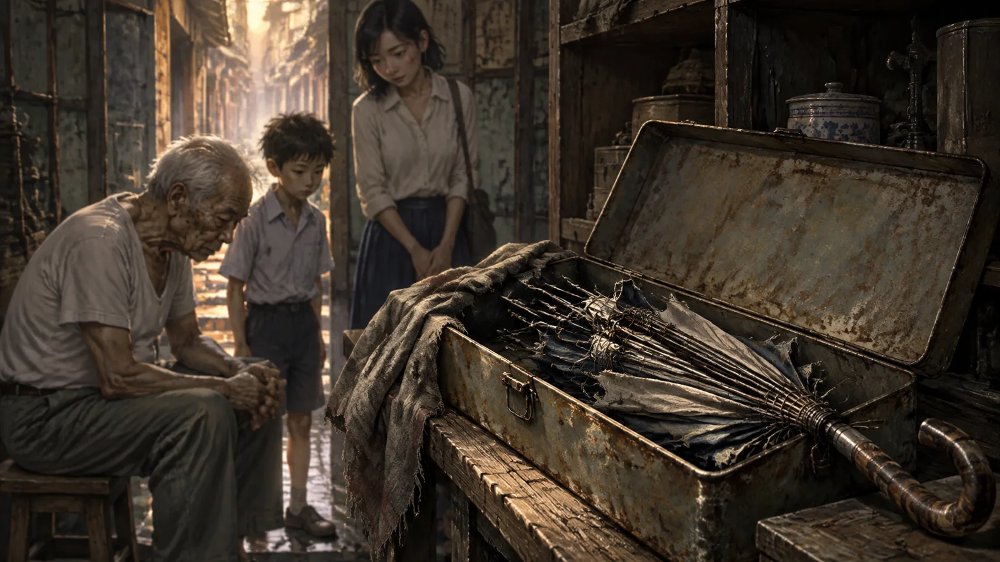
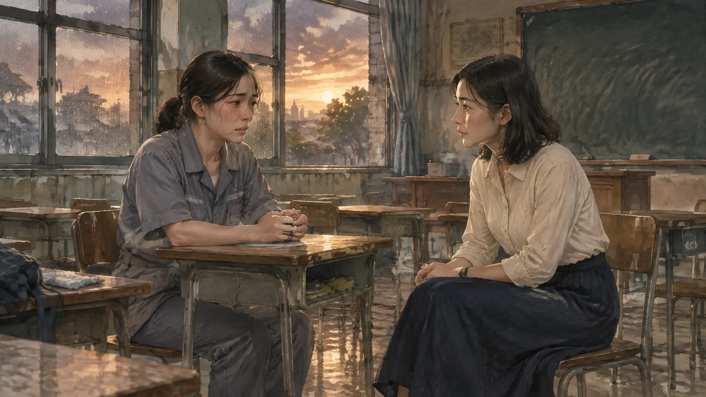
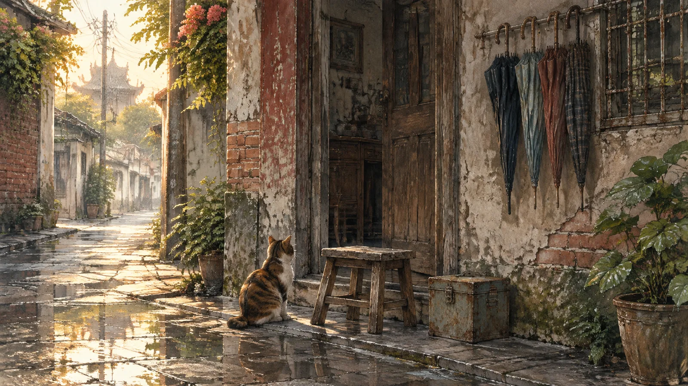
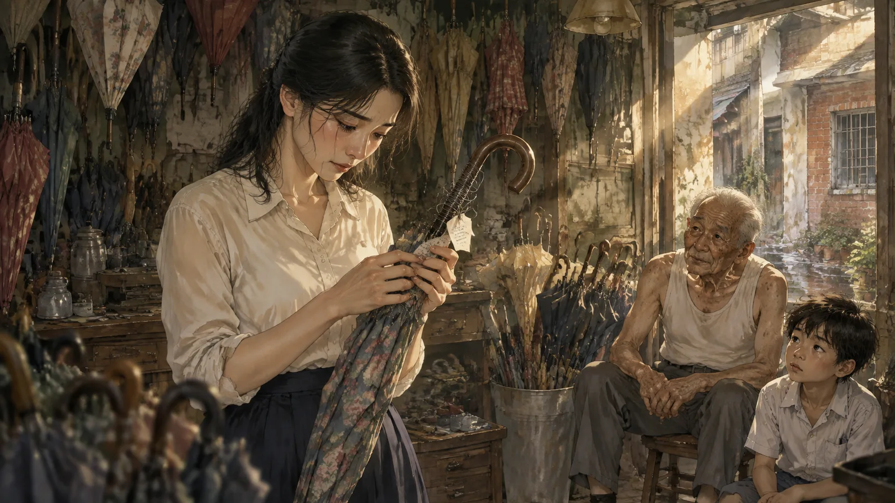
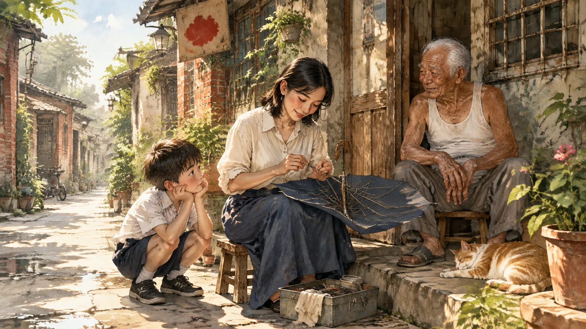

第一章巷口
台南的雨季，是從五月的某一個下午忽然開始的。
那天何映剛好在信義街的巷口。她是附近國小的老師，帶三年級，放學以後走路回家，經過這條巷子的時候，天忽然黑下來，雨像一整桶水被倒下來一樣。她躲進巷口一間矮房子的屋簷下，抬起頭，才看到那塊招牌。
「修傘」。兩個字，用紅漆寫在一塊木板上，漆掉了一半，「傘」字只剩下上面的人字頭。
房子很小，一間店面，門是開的，裡面很暗。一個老人坐在門口的矮凳上，手裡拿著一把黑色的傘，正在用一根很細的鐵絲，一圈一圈地綁傘骨。他很老了，頭髮全白，手背上全是老人斑，可是手指很穩，鐵絲繞得很整齊，像在編一個很小的籃子。

他抬起頭，看了何映一眼。
「躲雨的？」
「對，不好意思。」
「不用不好意思，屋簷就是給人躲雨的。」老人低下頭，繼續繞鐵絲，「妳的傘呢？」
何映這才想起來，她的傘在學校。她早上出門的時候天氣很好，她把傘留在辦公室裡。
「忘記帶。」
老人沒有說話，把手裡的傘繞完，撐開，收起，再撐開。傘骨很順，一點聲音都沒有。他把傘靠在牆邊，從店裡拿出另一把，是一把很舊的碎花傘，傘面褪色了，可是很乾淨。
「先拿去用。」他說，「有空再拿回來。」
「這樣不好意思——」
「傘就是要用的。」老人說，「放在這裡，它會不高興。」
何映撐著那把碎花傘走回家。雨很大，可是傘一點都不漏，傘骨很穩，風吹過來的時候也不翻。她回到家，把傘放在門邊，看著它，忽然想起小時候阿嬤也有一把這樣的傘。
第二天她去學校拿了自己的傘，下班的時候把碎花傘拿去還。
老人還坐在門口，還在繞鐵絲。他看了一眼傘，說：「淋到雨了？」
「一點點。」
「傘會記得。」他說，「妳撐它的時候，走路很急，它知道。」
何映笑了，以為他在開玩笑。老人也沒有再說什麼，把傘收進店裡，然後從矮凳旁邊拿起一把新的，開始修。
她後來才知道，老人姓陳，大家叫他阿貴伯，在這條巷口修傘修了五十三年。
第二章阿樂
何映的班上有一個孩子，叫阿樂。
九歲，很瘦，頭髮永遠沒有梳，制服的領子永遠有一邊是翻起來的。他不太說話，上課的時候常常看著窗外，下課的時候一個人坐在位子上畫畫。他畫得很好，畫的都是一些很奇怪的東西——一棟房子，門是開的，可是裡面沒有人；一輛車，車頂上站著一隻貓；一把傘，傘骨斷了三根，斜斜地插在地上。
何映知道阿樂家的事。他父親兩年前走了，車禍。母親在一間工廠上夜班，早上回來睡覺，阿樂自己起床，自己吃早餐，自己上學。學校的社工去過幾次，母親很客氣，說她沒問題，說阿樂很乖。
阿樂確實很乖。乖到何映覺得不對。
五月的一個下午，放學的時候又下雨了。何映站在校門口看孩子們回家，看到阿樂撐著一把傘走出來。傘很舊，藍色的，傘骨斷了兩根，傘面一半塌下來，雨從那一邊直接淋在他的肩膀上。他沒有換手，也沒有把傘轉一個方向，就那樣撐著，走進雨裡。
何映追了上去。
「阿樂，你的傘壞了。」
阿樂停下來，看著她，又看看傘。「還可以用。」
「一半都淋濕了。」
「這是我爸爸的傘。」阿樂說，「還可以用。」
何映看著那把傘，看著那兩根斷掉的傘骨，看著阿樂淋濕的肩膀。她想到了阿貴伯。
「阿樂，」她說，「老師知道一個地方可以修傘。我們去修好不好？修好了還是你爸爸的傘。」
阿樂想了很久。雨從傘的破洞滴在他的頭上。
「不會換掉嗎？」
「不會。就是修。」
「好。」
第三章修傘
阿貴伯看到那把傘的時候，把它接過去，翻過來，看傘骨，看傘面，看傘柄，看了很久。
「這把傘很老了。」他說，「三十幾年。」
「是他爸爸的。」何映說。阿樂站在旁邊，不說話，眼睛一直看著那把傘。
「他爸爸呢？」
「不在了。」
阿貴伯點點頭，沒有多問。他把傘放在膝蓋上，從矮凳旁邊的鐵盒裡拿出鐵絲、鉗子、一小段新的傘骨。他先把斷掉的傘骨拆下來，動作很慢，很輕，像在拆一個很容易碎的東西。然後他把新的傘骨接上去，用鐵絲一圈一圈地繞。
阿樂蹲在他旁邊看。

「阿伯，你在綁什麼？」
「綁傘骨。」
「為什麼要繞這麼多圈？」
阿貴伯的手停了一下。
「因為傘骨斷過。」他說，「斷過的地方要特別小心，要多繞幾圈，不然下一次颳風，它會從同一個地方再斷。」
阿樂點點頭，像是聽懂了。
「傘骨會記得它斷過的地方。」阿貴伯繼續繞，「人也一樣。」
修好了。阿貴伯把傘撐開，收起，撐開。傘面還是舊的，藍色褪成了灰藍，可是傘骨很直，一根都沒有歪。他把傘遞給阿樂。
阿樂接過去，撐開，看著傘面。他站在那裡，看了很久。然後他做了一件何映沒有想到的事——他把傘舉高，舉到頭頂上，仰起頭，像在看一片天空。
「多少錢？」何映問。
「不用。」阿貴伯說，「小孩子的傘不收錢。」
「阿伯，這樣不好——」
「有一件事要收。」阿貴伯看著阿樂，「明天，不管發生什麼事，都要撐這把傘。下雨撐，不下雨也撐。可以嗎？」
阿樂點點頭。
「好。」阿貴伯說，「那就這樣。」
✦
第二天沒有下雨。天很藍，太陽很大。
何映早上到學校的時候，看到阿樂撐著那把傘走進校門。其他的孩子笑他，說阿樂你瘋了，大太陽撐傘。阿樂不理他們，撐著傘走進教室，走到座位上，才把傘收起來，放在腳邊。

下午三點，學校的操場邊有一棵老榕樹倒了。

不是被風吹倒的，那天沒有風。是樹根爛了，校方一直知道，可是預算不夠，沒有處理。樹倒下來的時候，壓垮了操場邊的一排鐵欄杆，壓壞了三台腳踏車。沒有人受傷。
那是阿樂每天放學走的路。三點十分，他會經過那棵樹。那天他遲了五分鐘，因為他在教室裡找傘——傘明明放在腳邊，可是不見了，他找了五分鐘，才在教室後面的櫃子旁邊找到。沒有人知道傘是怎麼跑到那裡去的。
何映站在操場邊，看著那棵倒下的樹，看著壓壞的欄杆，看著站在旁邊撐著傘的阿樂。她的手在抖。
她告訴自己：巧合。
第四章傘的規矩
她還是去了巷口。
阿貴伯坐在矮凳上，手裡沒有傘，只是坐著，看著巷子。看到何映，他點了一下頭，像是知道她會來。
「樹倒了。」何映說。
「嗯。」
「你怎麼知道？」
「我不知道。」阿貴伯說，「我只知道，會有一件事。什麼事，我不知道。」
何映在他旁邊的另一張矮凳上坐下來。巷子裡很安靜，有一隻貓從對面的牆上走過去。

「阿伯，你修的傘，是怎麼回事？」
阿貴伯沉默了很久。
「我不太會講。」他說，「我做了五十三年，還是不太會講。我只知道：一把傘，修好了，它會替撐它的人擋一件事。不是擋雨，是擋別的。一件明天會發生的、不好的事。擋一次。」
「擋一次以後呢？」
「傘會壞。」阿貴伯說，「擋的那件事越大，壞得越厲害。有時候是斷一根骨，有時候是整把爛掉。然後要再修。」
「那再修，就可以再擋？」
「可以。」阿貴伯說，「可是每修一次，傘就老一次。到最後，修不了了。」
何映看著他放在膝蓋上的手。那雙手很穩，可是關節腫得很大，有幾根手指是彎的，伸不直。
「你修了五十三年。」她說，「擋了多少件事？」
「不記得了。」
「有沒有擋過很大的事？」
阿貴伯看著巷子。那隻貓停在牆上，看著他們。
「有。」他說，「一九九〇年，一個媽媽帶她的傘來修。她說她先生在船上工作，下個月要出海。我修好了，跟她說，叫他帶著這把傘上船。她說船上不會下雨。我說帶著就對了。」
「然後呢？」
「船翻了。」阿貴伯說，「十一個人，活了一個。就是他。他抱著那把傘，浮了六個小時，被漁船撈起來的時候，傘已經不成樣子了，傘骨全斷，傘面只剩下幾條布。可是他抱著。」
何映沒有說話。
「那把傘我沒有辦法再修。」阿貴伯說，「它擋的事太大了。它壞得太徹底。我把它收在店裡，收到現在。」

「阿伯，」何映說，「那你自己的傘呢？」
阿貴伯轉過頭看她。他的眼睛很老，可是很清楚。
「我沒有傘。」他說，「修傘的人，不能有自己的傘。」
「為什麼？」
「因為傘擋的事，總要有人接。」阿貴伯說得很輕，像在說一件很普通的事，「傘擋住了，那件事不會消失，它會去別的地方。去哪裡？去修傘的人身上。一點一點。五十三年。」
他舉起那雙彎曲的手，在何映面前翻了翻。
「這個，」他說，「就是那些事。」
第五章雨季
那一年的雨季很長。
何映開始常常去巷口。有時候是帶學生的傘去修——她發現班上有好幾個孩子的傘都壞了，她一把一把帶去，阿貴伯一把一把修，不收錢，只說「明天要撐」。有時候她只是去坐著，看阿貴伯繞鐵絲，聽他講傘的事。
她漸漸知道了一些規矩。
傘擋的事，是撐傘的人「最需要擋的那一件」。不一定是最大的，是最需要的。一個孩子最需要擋的，可能是一棵倒下來的樹；一個大人最需要擋的，可能是一句話、一個決定、一次遲到。傘自己會知道。
傘擋了以後，那件事會轉到修傘的人身上，可是不是原樣轉過去。是變成別的形式。一棵樹倒下來的重量，變成一次關節痛。一句傷人的話，變成一個晚上的失眠。一場船難——阿貴伯沒有說那一次他怎麼了，何映也沒有問。
修傘的人不能有自己的傘，因為如果他有，他的傘會替他擋住那些轉過來的事，那那些事又要去哪裡？「總要有一個地方是盡頭。」阿貴伯說。
何映問過他：為什麼要做這個？
阿貴伯想了很久。
「我十九歲的時候，」他說，「我媽媽帶我來這裡。這間店以前是一個姓林的老先生開的，也是修傘。我媽媽跟他說，這個孩子沒有出息，你收他做學徒。林先生看了我一眼，說好。」
「就這樣？」
「就這樣。」阿貴伯說，「林先生教了我三年，然後他走了。他走的前一天，跟我說了傘的事。他說：你可以不做。你可以把店關了，去做別的。我說我沒有別的可以做。他說，那你就要記得，你修的每一把傘，都是你自己的一部分。」
「你後悔嗎？」
阿貴伯看著手裡的傘，繞了一圈鐵絲。
「有時候。」他說，「痛的時候。可是我看到一個孩子撐著傘走過去，那棵樹沒有砸到他，我就不後悔了。」
✦
六月底，阿樂的媽媽來學校。

她穿著工廠的制服，眼睛下面有很深的黑眼圈，可是頭髮梳得很整齊。她站在教室門口，等所有的孩子都走了，才進來。
「何老師，」她說，「我想跟妳說一件事。」
何映請她坐下。
「上個星期，」阿樂的媽媽說，「我本來要帶阿樂走。我跟工廠辭了，找了一間高雄的工作，房子也看好了。我想離開台南，這裡有太多他爸爸的東西。」
何映等著。
「我把東西都收好了，車也叫了。阿樂站在門口，撐著他爸爸那把傘，就是妳帶去修的那一把。他說：媽媽，這把傘修好了，我們不要走。」
阿樂的媽媽的眼睛紅了。
「我不知道為什麼，」她說，「我看著那把傘，我就哭了。我把車退了。我跟工廠說我不辭了。我不知道那把傘有什麼，可是它讓我覺得，我們還可以留下來。」
何映沒有說話。她想起阿貴伯說的：傘擋的事，是撐傘的人最需要擋的那一件。
「何老師，」阿樂的媽媽說，「那個修傘的阿伯，我想去謝謝他。」
第六章學徒
七月初，何映開始跟阿貴伯學修傘。
不是正式的。她只是某一天下午坐在矮凳上，看阿貴伯繞鐵絲看了很久，然後說：「阿伯，我可以試試看嗎？」阿貴伯看了她一眼，把手裡的傘遞給她，把鉗子和鐵絲放在她膝蓋上，說：「從第三根開始。」
第一次繞，她繞了二十分鐘，繞得歪七扭八，鐵絲的尾端刺出來，割破了她的手指。阿貴伯沒有說什麼，把傘拿回去，一圈一圈拆掉，再繞一次給她看。他的手指是彎的，可是繞出來的鐵絲像機器做的一樣整齊。
「不要用力。」他說，「傘骨很細，妳用力它就彎。妳要讓鐵絲自己繞上去。」
「鐵絲怎麼會自己繞？」
「妳的手要知道它要去哪裡。」阿貴伯說，「知道了，就不用用力。」
何映不太懂。可是她每天下午都來，繞一把，兩把，三把。第一個星期她的手指上全是小傷口，第二個星期傷口變成了繭，第三個星期她繞出來的鐵絲，開始有一點點像樣了。
「這一把，」阿貴伯有一天看著她修好的一把傘，撐開，收起，撐開，「可以了。」
「可以擋事了嗎？」
阿貴伯把傘遞給她。
「我不知道。」他說，「這要看撐傘的人。妳修好了，它就是一把好傘。它會不會擋，那是它跟撐傘的人之間的事，不是妳的事。」
「那你怎麼知道你的傘會擋？」
「我不知道。」阿貴伯說，「我只是修。修了五十三年，有些擋了，有些沒有。我不去問。」
✦
那個星期，一個老太太來修傘。
八十幾歲，拄著拐杖，一隻手拿著一把黑色的老式長柄傘，傘柄是彎的，木頭的，被摸得很亮。她把傘放在阿貴伯的膝蓋上，說：「阿貴，又壞了。」
阿貴伯看了看傘。傘骨斷了一根，傘面上有一個小洞。
「陳太太，這一把上個月才修過。」
「我知道。」老太太在何映旁邊的矮凳上坐下來，「上個星期有人打電話給我，說是我孫子，說他在台北出車禍，要我匯錢。我拿著電話，看著這把傘，忽然覺得不對。我問他：你阿嬤叫什麼名字？他掛了。」
何映看著那把傘上的小洞。
「妳的傘擋的。」阿貴伯說。
「我知道。」老太太說，「所以我來修。」
阿貴伯修好了。老太太走的時候，把一袋芒果放在鐵盒旁邊，說是自己家種的。阿貴伯把芒果拿了兩顆給何映，說：「妳看，這就是修傘的錢。」
何映拿著芒果，看著老太太拄著拐杖、撐著傘走進巷子深處的背影。那天沒有下雨。
「阿伯，」她說，「那件事——那通電話——轉到你身上了嗎？」
阿貴伯繞著鐵絲，沒有抬頭。
「昨天晚上，」他說，「我夢到我媽媽。她說她在台北出車禍，要我去找她。我在夢裡走了一整個晚上，找不到台北在哪裡。醒來的時候，枕頭是濕的。」
他把鐵絲的尾端折進去，收好。
「就這樣。」他說，「一個晚上。不算什麼。」
✦
七月的一個晚上，何映沒有睡。
她坐在自己租的小套房裡，桌上放著一把傘——是她自己的，一把很普通的折疊傘，便利商店買的，用了三年。她看著它，想著阿貴伯說的話：修傘的人不能有自己的傘。
她想，我還不是修傘的人。我只是在學。
她想，可是如果有一天我是了呢？
她想起那棵樹。想起阿樂遲了五分鐘。想起阿樂的媽媽說：我看著那把傘，我就哭了。她想起船翻了，十一個人，活了一個，抱著一把傘浮了六個小時。她想起阿貴伯彎曲的手指，想起他說「一個晚上，不算什麼」。
她不知道自己受不受得了。
可是她也想起了另一件事。在學校，她教了十年書，教過幾百個孩子。她看著他們長大，看著他們遇到事情——父母離婚，家裡沒錢，被同學欺負，考試考不好，被老師罵。她從來沒有辦法替他們擋。她只能站在旁邊，說「沒關係」，說「會過去的」。
如果有一把傘可以擋。哪怕只擋一件。
她把桌上的折疊傘拿起來，撐開，收起，撐開。傘骨有一根有一點歪。她從抽屜裡拿出鐵絲——她現在隨身帶著——把那根傘骨繞了一圈。
繞得不太好。可是她的手知道它要去哪裡。
第七章收傘
阿貴伯是在七月走的。

不是生病，是老了。他八十三歲，某一天早上沒有起來，就這樣。隔壁的鄰居發現的，因為那天早上巷口的矮凳上沒有人。
何映去的時候，店裡已經有幾個人。都是附近的老鄰居，有人在收拾東西，有人在講以前的事。店裡的傘很多，牆上掛滿了，地上堆著，有修好的，有還沒修的，有的傘面已經褪成看不出原本的顏色。
一個鄰居把一把傘遞給她。
「這把，」鄰居說，「阿貴伯前幾天說，如果有一個老師來，就給她。」
是那把碎花傘。第一天她躲雨的時候借的那一把。

傘面褪色了，可是很乾淨，傘骨一根都沒有歪。傘柄上綁著一小張紙，用鐵絲綁的，繞了很多圈。何映把紙拆下來，上面是阿貴伯的字，很大，很歪，像是用不太能彎的手指寫的：
「這把傘是我媽媽的。她走了以後我修了一次，它擋了一件事，然後我就沒有再撐過它。妳撐。它會記得妳。」
何映站在店裡，拿著那把傘，看著滿屋子的傘。
「阿伯有沒有家人？」她問。
鄰居搖搖頭。「沒有。老婆很早就走了，沒有孩子。這間店——不知道要怎麼辦。房東說要收回去。」
何映看著店的深處。在最裡面的架子上，有一把傘，用一塊布包著，放在一個鐵盒裡。她走過去，把布掀開。傘骨全斷，傘面只剩下幾條布，可是那些布被很仔細地摺好，傘骨被鐵絲一根一根綁在一起，像有人花了很多時間，試著把一個不可能修好的東西修好。
一九九〇年。船翻了。十一個人，活了一個。
她把布蓋回去。
✦
七月的最後一個星期，何映去找房東。
她說她想租這間店。房東看著她，一個國小老師，租一間修傘的店？何映說，對。房東問她會修傘嗎？何映說，會一點。
她其實不太會。她跟阿貴伯學過幾次，會換傘骨，會繞鐵絲，可是繞得沒有他整齊。她不知道自己修的傘會不會擋事。她也不知道，如果會，那些事轉到她身上，她受不受得了。
可是她想起阿貴伯說的：總要有一個地方是盡頭。
她想起阿樂撐著傘站在門口，說我們不要走。
她想起那棵樹。
第八章第一把傘
九月，何映在巷口坐下來。

她請了長假，學校說可以，一年。她把矮凳搬出來，把鐵盒放在旁邊，把招牌重新漆了一遍——「修傘」，兩個字，紅色的，她漆得不太好，「傘」字有一點歪。
第一個客人是阿樂。
他撐著他爸爸的傘走過來。傘骨又斷了一根，是上個星期颱風的時候斷的。他把傘遞給何映，說：「老師，可以修嗎？」
何映接過來，翻過來看。斷的是新接的那一根旁邊的一根。阿貴伯說得對，斷過的地方要多繞幾圈，可是旁邊的地方也會老。
「可以。」她說。
她拆傘骨，接新的，繞鐵絲。她繞得很慢，很小心，一圈一圈，數著圈數。阿樂蹲在旁邊看，跟以前一樣。
「老師，」他說，「妳為什麼要修傘？」
何映想了一下。
「因為有一個人教我，」她說，「傘是用來擋事的。有人要修，才有傘可以擋。」
「那擋的事去哪裡？」
何映的手停了一下。她看著阿樂，這個九歲的、頭髮永遠沒有梳的孩子，他的眼睛很清楚，像是早就知道答案。
「去修傘的人那裡。」她說。
阿樂點點頭。
「那老師，」他說，「妳的傘呢？」
何映看著店裡。那把碎花傘掛在牆上，她沒有撐過。她想撐，很多次，下雨的時候她看著它，想把它拿下來。可是她沒有。
「修傘的人，」她說，「不能有自己的傘。」
阿樂沒有說話。他看著那把碎花傘，看了很久，然後他說了一句話。
「那我幫妳撐。」
何映愣住了。
「下雨的時候，」阿樂說，「我撐那把傘，走在妳旁邊。那就不是妳的傘，是我的。可是妳也不會淋到雨。」
何映看著他。她的眼睛忽然很熱。
「這樣可以嗎？」阿樂問。
何映想起阿貴伯的手，彎曲的，腫大的，五十三年。她想起他說：總要有一個地方是盡頭。她忽然想，也許不是這樣。也許盡頭不一定是一個人。也許可以是兩個人，三個人，一整條巷子的人，輪流撐一把傘，走在彼此旁邊。
也許這樣，那些事就不會那麼重。
「可以。」她說。
她把阿樂的傘修好，撐開，收起，撐開。傘骨很直。她把傘遞給他。
「明天，不管發生什麼事，都要撐。」她說。
阿樂接過傘，點點頭。然後他走到牆邊，把那把碎花傘拿下來，也撐開。兩把傘，一把藍的，一把碎花的，在巷口的太陽下，像兩朵開得很慢的花。
「老師，」他說，「今天沒有下雨。」
「沒關係。」何映說，「傘會記得。」
（完）
留言板
看不懂、想補充、發現錯誤都歡迎留言；填個暱稱就能發。